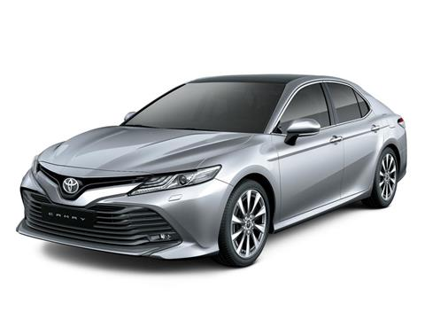

VEHICULOS
Productos
Toyota Yaris hatchback

Su nuevo modelo Yaris, que se ofrece en una versión CVT de 5 puertas, con el que amplía su line-up en Argentina y que representa una apuesta fuerte de la marca en el segmento de vehículos compactos, al que ingresó con éxito gracias a la introducción de Etios en 2013. En términos de diseño exterior, Yaris es estilizado y con una vista frontal que le otorga una personalidad con aire deportivo. Por dentro, ofrece un gran espacio interior que permite el transporte de 5 personas cómodas, y una capacidad de carga de 326 lt, una de las más amplias del segmento. Yaris ofrece una nueva alternativa tanto para los clientes de la marca, como para aquellos que aún no son usuarios de Toyota pero buscan un vehículo con personalidad, espacio y comodidad, que los acompañe en un momento importante de sus vidas.
Las ópticas delanteras halógenas alargadas, integradas a la vista lateral, junto con la parrilla inferior de forma trapezoidal, le dan al nuevo Toyota Yaris un diseño frontal con una mirada penetrante (Keen Look). En tanto, las amplias líneas laterales marcadas junto con las llantas de aleación de 15" (165 / 60 R15) acentúan su diseño dinámico. El diseño trasero despliega una imagen ancha y estable. Los pilares negros y el diseño aerodinámico de los faros (en forma de C) realzan su vista trasera. Para reforzar la excelente economía de combustible y la estabilidad del nuevo Toyota Yaris se incorporaron varias medidas aerodinámicas como, por ejemplo, el diseño del techo que permite una disminución del ruido y un mejor flujo de aire dándole mayor estabilidad, optimizando la sensación de manejo y obteniendo un menor consumo de combustible. Los espejos exteriores y los faros traseros presentan unas aletas aerodinámicas que también aportan una mayor estabilidad y una disminución del ruido del viento a altas velocidades.
El nuevo Toyota Yaris presenta una excelente calidad en sus terminaciones y materiales. En su espacioso interior se aprecian detalles satinados y cromados: las puertas y el tablero fueron desarrollados con materiales suaves al tacto y los asientos están tapizados en tela con doble costura de hilo rojo. El asiento del conductor además cuenta con ajuste en altura para mayor confort.
El panel de instrumentos divide la información en 3 partes. A la izquierda se encuentra el tacómetro y a la derecha el medidor de combustible y otros indicadores lumínicos. En el centro con borde cromado se encuentra el velocímetro y la computadora de abordo, que permite ver información de viaje, consumo de combustible cada 100 km y autonomía. Además posee un indicador "ECO" de consumo para quienes privilegian una conducción más económica.
La performance es aportada por el excelente motor 2NR-FE Toyota de 1.5 litros (1496cc), 4 cilindros en línea, 16 válvulas con doble árbol de levas a la cabeza y cumple con normativa de emisiones Euro5. El motor cuenta con tecnología Dual VVT-i que ajusta continuamente el instante de apertura y cierre de las válvulas de admisión y escape. De esta coordinación constante resulta una mayor potencia y, a su vez, una mejor optimización del consumo de combustible, reduciendo las emisiones de CO2.
Toyota Corolla

El Toyota Corolla se asienta sobre la plataforma TNGA (Toyota New Global Architecture) y es más bajo (cuatro centímetros), más ancho (tres centímetros) y más largo que su predecesor: el Toyota Auris. La versión de cinco puertas mide 4,37 metros de largo, 1,79 metros de ancho y 1,43 metros de alto; la capacidad de su maletero, de formas muy regulares, es de 361 litros.
El Toyota Corolla es un compacto con empaque que apuesta por un diseño llamativo con líneas con personalidad, dinámicas y una cintura que no pasa desapercibida. Bajo esa nariz redondeada aparece una malla de nido de abeja en tono negro ocupa la parrilla ubicada en la defensa frontal y cuenta con unas inserciones cromadas en las luces antiniebla. Las afiladas ópticas delanteras cuentan con tecnología LED, igual que las traseras. De camino a la zaga se puede observar que sus pasos de rueda están bien marcados y que la forma del pilar C confiere a la parte trasera mucha carga visual.
La gama mecánica del Toyota Corolla está compuesta por dos mecánicas híbridas, disponibles en las tres carrocerías, que arrojan unas emisiones de 102 a 107 g/km de CO2 y unos consumos entre 4,6 y 5,3 l/100 km.
Su mayor ancho de vías y la suspensión trasera independiente hacen que el coche gire mucho más plano en curvas y sea ágil en los cambios de apoyo. Mantiene el aplomo ante cualquier bache y un buen compromiso a medio camino entre la comodidad y la firmeza. Es seguro, dinámico (aunque su dirección está filtrada y asistida) y sigue siendo un coche muy eficiente.
Toyota Etios

El Toyota Etios continua reforzando su actitud gracias a la incorporación de un nuevo diseño de parrilla, llantas de aleación y faros oscurecidos. Además, incorpora de serie Control de estabilidad y Control de tracción que en conjunto con su excelente performance de motor y transmisión hacen al Etios la opción ideal para recorrer el camino.
Etios incorpora control de estabilidad (VSC), control de tracción (TRC) y asistente de ascenso en pendiente (HAC) en todas sus versiones. Los frenos de alta reacción que combinan capacidad antibloqueo con distribución de fuerzas (ABS con EBD), las barras laterales de protección, el sistema de anclaje ISOFIX y los airbags frontales aportan tranquilidad y seguridad a todos los pasajeros.
Entre sus aspectos tecnológicos se destacan dos pantallas de alta resolución: una muestra el velocímetro digital y la otra exhibe el tacómetro y datos como temperatura de motor, consumo y autonomía, entre otros.
Dirección asistida eléctricamente, aire acondicionado, apertura eléctrica de baúl, cierre centralizado a distancia integrado en llave, levantavidrios eléctricos delanteros, display de información múltiple digital de 4,2″, equipo de audio con CD, MP3, Bluetooth, USB y entrada auxiliar.
Toyota Prius

Ya desde la primera vista el Prius se ve como un auto distinto a lo acostumbrado. Su particular diseño busca remarcar su naturaleza híbrida, pero le sirve también para obtener un muy buen coeficiente aerodinámico de 0,24 Cx. Es un poco más grande que la generación anterior con 4,54 m. de largo; un ancho de 1,76 m y una altura de 1,49 m. La distancia entre ejes es muy buena, con 2,7 metros, lo que le otorga un muy buen espacio interior.
Esta cuarta generación está equipada con un motor naftero de tipo Atkinson de 1.8 litros de cilindrada que genera 98 CV y 142 Nm de torque. Lo que le da el carácter de “híbrido” es que funciona asociado a un motor eléctrico que por sí solo genera una potencia de 72 CV y 163 Nm.
En el centro de la consola domina una pantalla táctil de 7” para el sistema multimedia, en donde también se proyecta la cámara de retroceso (con guías y asistencia sonora) y el navegador satelital. Es un dispositivo similar al que equipan otros modelos de Toyota, y aquí podría evolucionar en algunos puntos. Si bien es lo suficientemente intuitivo, las funciones del sistema de audio no permiten una rápida búsqueda de estaciones o subir o bajar el volumen con rapidez, entre otras cosas.
En cuanto al equipamiento de seguridad, como es de esperar cuenta con frenos con ABS y distribución electrónica de frenado (EBD), más asistencia de frenado de emergencia (BA). También tiene de serie el control de estabilidad (que Toyota denomina VSC) y control de tracción (TRC).
En seguridad pasiva está bien equipado también, con un total de 7 airbags y sistemas de anclajes ISOFIX en los asientos traseros, entre otras cosas. Se puede destacar también el avanzado sistema de iluminación exterior, con faros delanteros bi-LED, antinieblas de LED, y lo mismo para el conjunto óptico trasero, con lo que logra una excelente visibilidad en su conjunto.
Toyota Camry

Su figura impacta por su logrado diseño deportivo. El frontal es agresivo, con un lanzado capot que se ensambla perfectamente con la amplia parrilla que tiene elementos horizontales color carrocería y un gran logo de Toyota en el centro. Además, las grandes ópticas que se desplazan hacia los guardabarros, junto al paragolpes envolvente que posee una abertura en el centro y dos faros de profundidad en cada extremo, complementan en forma armoniosa todo el conjunto.
El interior del Camry es por demás cómodo y acogedor donde 5 personas pueden viajar placenteramente por la amplitud del espacio, gracias a las dimensiones de su carrocería (4.805 mm. de largo; 1.820 mm. de ancho; 1.460 mm. de alto y 2.775 mm. de distancia entre ejes).
Además, sobra lujo por donde se lo mire; desde el tapizado de fino cuero en los asientos y paneles de puertas; el volante de cuatro rayos revestido en cuero y madera; los insertos de madera de nogal, cuero y aluminio en tablero, consola y puertas; la empuñadura de la palanca de cambios cubierta en madera de nogal y cuero, hasta la fina terminación de todo el conjunto. Por otra parte, el Camry tiene distribuidos en su interior numerosos espacios porta-objetos.
Este vehículo viene equipado con un motor naftero de 6 cilindros dispuestos en V, de 3.456 cc. de cilindrada y una relación de compresión de 10.8:1. La alimentación es por inyección electrónica multipunto, y la distribución por doble árbol de levas por bancada, comandados por cadena, 24 válvulas DOHC, sistema Doble VVT-i. Eroga una potencia de 277 CV a 6.200 rpm, con un torque de 346 Nm a 4.700 rpm.
La suspensión delantera del Camry es independiente, con un esquema McPherson, amortiguadores telescópicos, resortes helicoidales y barra estabilizadora. La trasera también es independiente, con un esquema multibrazo, con amortiguadores telescópicos, resortes helicoidales y barra estabilizadora.
Por su parte, los frenos delanteros son de discos ventilados y los traseros de discos sólidos. Ambos trenes cuentan con Sistema Antibloqueo de Freno (ABS), Distribución Electrónica de Frenado (EBD) y Asistente de Frenado (BA).
El Toyota Camry trae un completo equipamiento de seguridad, tanto activa como pasiva, debiéndose destacar los sistemas de Control de Tracción (TRC) y de Estabilidad (VSC) que aseguran un total dominio del vehículo frente a situaciones difíciles.